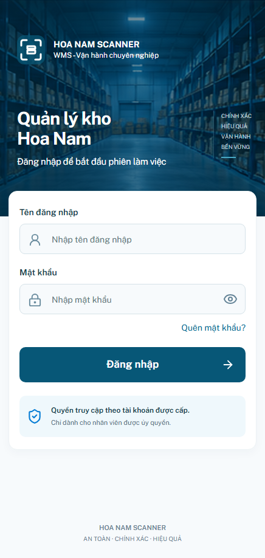
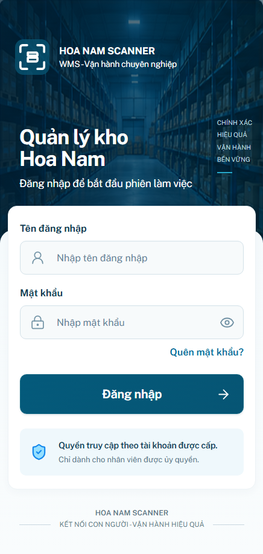
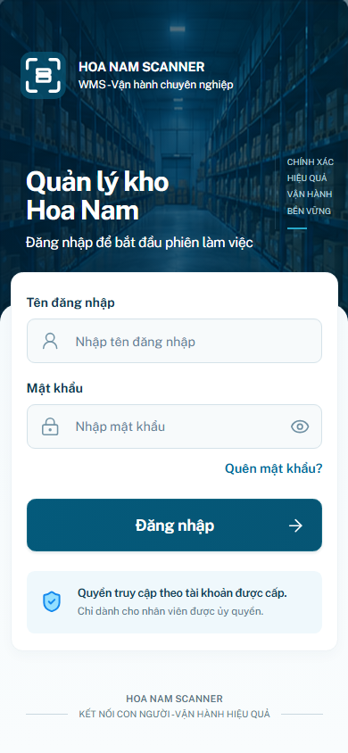
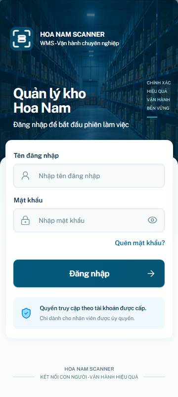
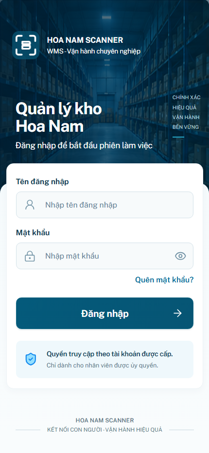
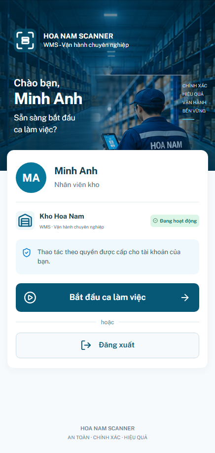
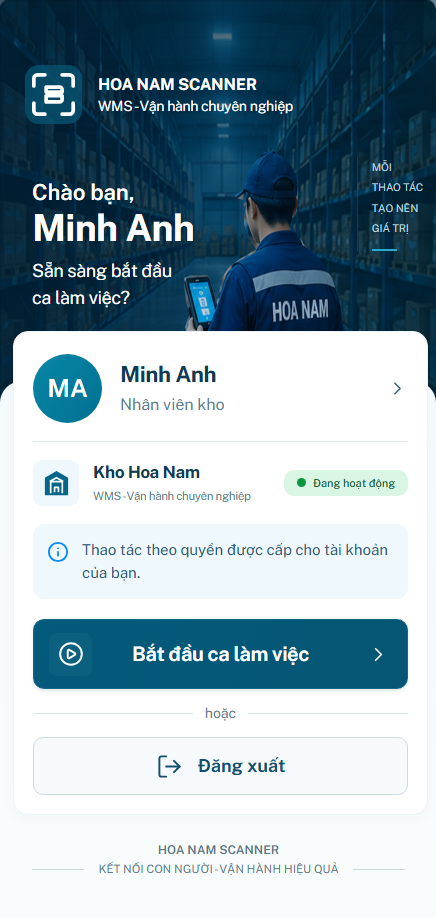
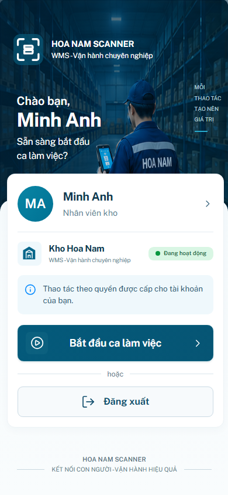
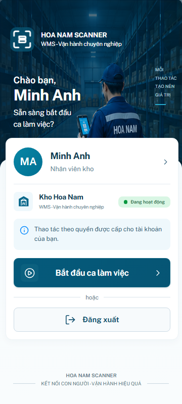
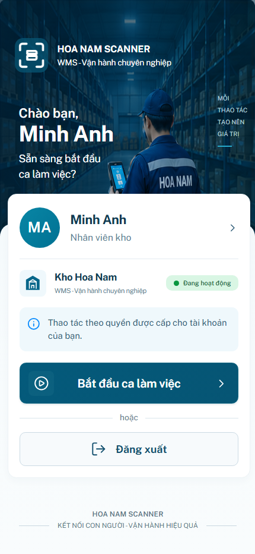

Đăng nhập + Xác nhận phiên làm việc
Mở app cập nhật · Báo cáo · QA
Đăng nhập · Reference / Before / After
Reference — vùng app436×918Before
After
Mobile390×844 / 360×800 /430×932
390
360
430
Xác nhận phiên làm việc · Reference / Before / After
Reference — vùng app436×918Before
After
Mobile390×844 / 360×800 /430×932
390
360
430
Thông số đã đo
Reference crop và bounds được đọc thủ công. Không suy ra từ bảng này rằng mọi pixel ảnh nền và font đã giống100%.
| Screen / component | Reference x/y/w/h | After x/y/w/h | Delta |
|---|
| login .sc-entry-card | 13/341/411/470 | 13/341/411/470 | 0/0/0/0 |
| login #sc-auth-id | 33/399/372/56 | 33/399/371/56 | 0/0/-1/0 |
| login #sc-auth-password | 33/506/372/56 | 33/506/371/56 | 0/0/-1/0 |
| login .sc-entry-primary | 33/619/372/66 | 33/620/371/66 | 0/1/-1/0 |
| login .sc-entry-reassurance | 33/710/372/78 | 33/710/371/78 | 0/0/-1/0 |
| shift .sc-entry-card | 12/331/416/484 | 13/331/415/484 | 1/0/-1/0 |
| shift .sc-entry-avatar | 33/354/69/69 | 33/354/69/69 | 0/0/0/0 |
| shift .sc-entry-primary | 32/619/376/70 | 33/619/375/70 | 1/0/-1/0 |
| shift .sc-entry-signout | 32/737/376/58 | 33/737/375/58 | 1/0/-1/0 |